Em 2018, 23 dias após Thanos ter eliminado metade de toda a vida no universo, Carol Danvers resgata a nave de Tony Stark e Nebulosa perdida no espaço. Eles se reúnem com os Vingadores restantes — Bruce Banner, Steve Rogers, Thor, Natasha Romanoff e James Rhodes — e Rocket na Terra. Localizando Thanos em um planeta desabitado, eles planejam usar as Joias do Infinito para reverter suas ações, mas descobrem que Thanos já as destruiu a fim de impedir que fossem usadas novamente. Enfurecido, Thor decapita Thanos.
Cinco anos depois, em 2023, Scott Lang escapa do Reino Quântico. Chegando ao Complexo dos Vingadores, ele explica que passou apenas cinco horas preso. Teorizando que o Reino Quântico permite viajar no tempo, eles pedem a ajuda de Stark para recuperar as Joias no passado a fim de reverter as ações de Thanos no presente. Stark, Rocket e Banner — este último que, desde então, fundiu sua inteligência com a força do Hulk — constroem uma máquina do tempo. Banner observa que alterar o passado não afeta o presente; quaisquer mudanças criam realidades alternativas. Banner e Rocket viajam para Tønsberg, Noruega, onde visitam o assentamento de refugiados asgardianos em Nova Asgard e recrutam um Thor obeso e desanimado. Em Tóquio, Romanoff recruta Clint Barton, que se tornou um justiceiro após a morte de sua família.
Banner, Lang, Rogers e Stark viajam no tempo para Nova Iorque durante o ataque de Loki em 2012. No Sanctum Sanctorum, Banner convence a Anciã a lhe dar a Joia do Tempo, depois de prometer devolver as múltiplas Joias aos seus devidos pontos no tempo. Na Torre Stark, Rogers recupera a Joia da Mente dos agentes adormecidos da Hidra após batalhar com seu eu de 2012, mas a tentativa de Stark e Lang de roubar a Joia do Espaço falha, permitindo que uma variante de 2012 de Loki escape com ela. Rogers e Stark viajam para Camp Lehigh em 1970, onde Stark obtém uma versão anterior da Joia do Espaço e encontra seu pai, Howard. Rogers rouba Partículas Pym do laboratório de Hank Pym para retornar ao presente e espia seu amor perdido, a agente Peggy Carter.
Enquanto isso, Rocket e Thor viajam para Asgard em 2013; Rocket extrai a Joia da Realidade de Jane Foster, enquanto Thor é encorajado por sua mãe, Frigga, e recupera seu antigo martelo, Mjölnir. Barton, Romanoff, Nebulosa e Rhodes viajam para 2014; Nebulosa e Rhodes vão para Morag e roubam a Joia do Poder antes que Peter Quill pudesse roubá-la, enquanto Barton e Romanoff viajam para Vormir. O guardião da Joia da Alma, Caveira Vermelha, revela que ela só pode ser adquirida sacrificando alguém a quem se ama. Romanoff se sacrifica, permitindo que Barton obtenha a Joia. Rhodes e Nebulosa tentam retornar ao seu próprio tempo, mas Nebulosa fica incapacitada quando seus implantes cibernéticos se conectam com o seu eu do passado, permitindo que uma variante de 2014 de Thanos descubra sobre o sucesso de seu eu do futuro e a tentativa dos Vingadores de impedi-lo. Thanos envia Nebulosa de 2014 de volta para os Vingadores, no lugar de sua versão futura, a tempo de se preparar para sua chegada.
Reunindo-se no presente, os Vingadores colocam as Joias em uma manopla que Stark, Banner e Rocket construíram. Banner, tendo a maior resistência à sua radiação, empunha a manopla e realiza um segundo estalo que reverte as desintegrações de Thanos. Enquanto isso, Nebulosa de 2014, personificando sua versão do futuro, usa a máquina do tempo para transportar Thanos de 2014 e sua nave de guerra para o presente, que ele usa para destruir o Complexo dos Vingadores. A Nebulosa atual convence Gamora de 2014 a se rebelar contra Thanos, mas não consegue convencer a Nebulosa de 2014 e a mata. Thanos enfrenta e subjuga Stark, Thor e um Rogers que conseguiu empunhar Mjölnir, e convoca seu exército para recuperar as Joias, com a intenção de usá-las para destruir o universo e criar um novo. Stephen Strange, após ser ressuscitado, teleporta os outros Vingadores que foram restaurados, junto dos Guardiões da Galáxia, exércitos de Magos, Wakanda, Saqueadores e Asgard para lutarem contra o exército de Thanos. Danvers também chega e destrói a nave de guerra de Thanos, mas este a domina e empunha a manopla. Stark obtém as Joias e as usa para realizar um terceiro estalo, que desintegra Thanos e seu exército, mas acaba matando-o no processo.
Após o funeral de Stark, Thor nomeia Valquíria como a nova rainha de Nova Asgard e se junta aos Guardiões, que partem sem Gamora. Rogers usa a máquina do tempo mais uma vez para colocar as joias e o Mjölnir às suas próprias linhas temporais e permanece no passado para viver com Carter. No presente, um Rogers idoso passa seu escudo para Sam Wilson.
-
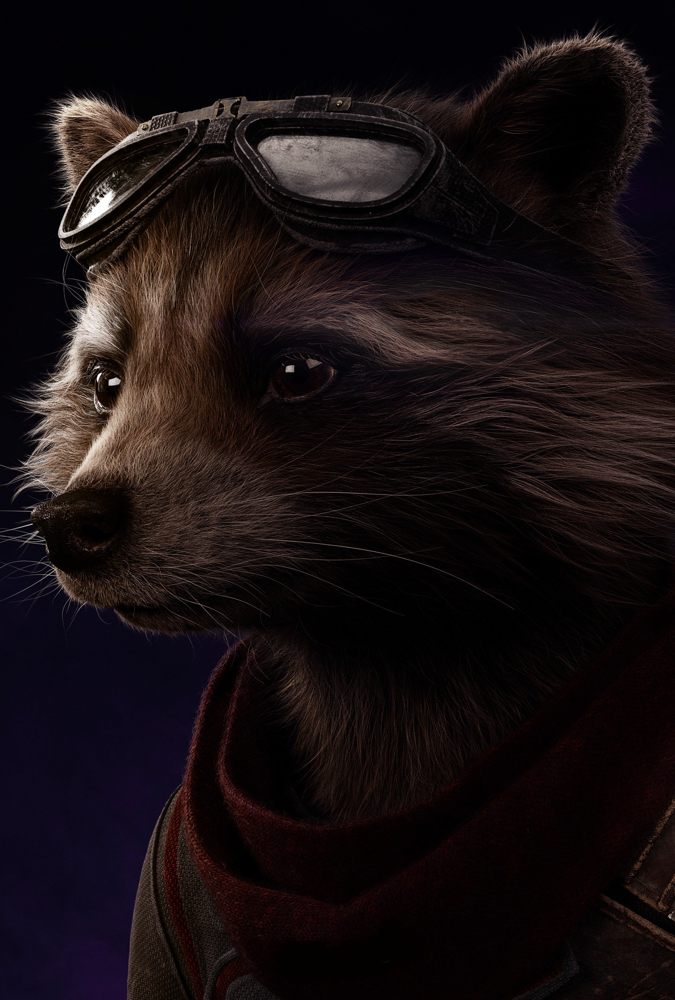
Rocket Raccoon
-
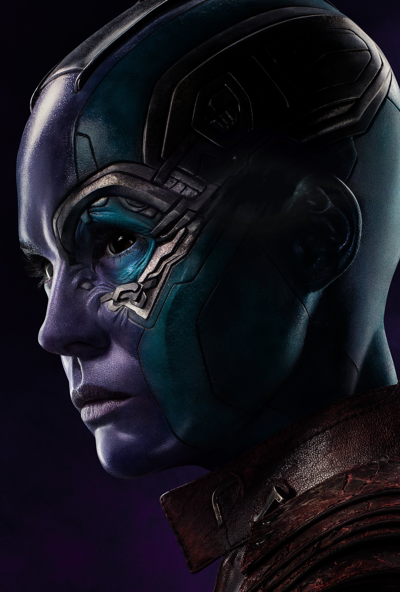
Nebula
-
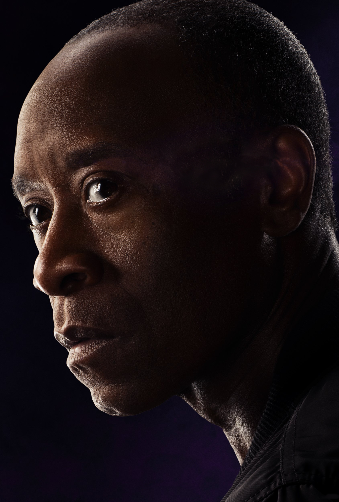
James Rhodes
-
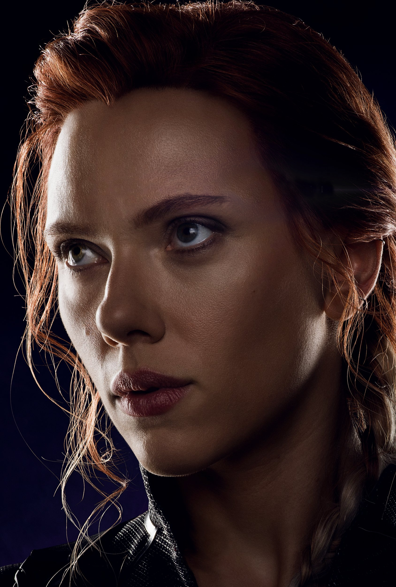
Natasha Romanoff
-
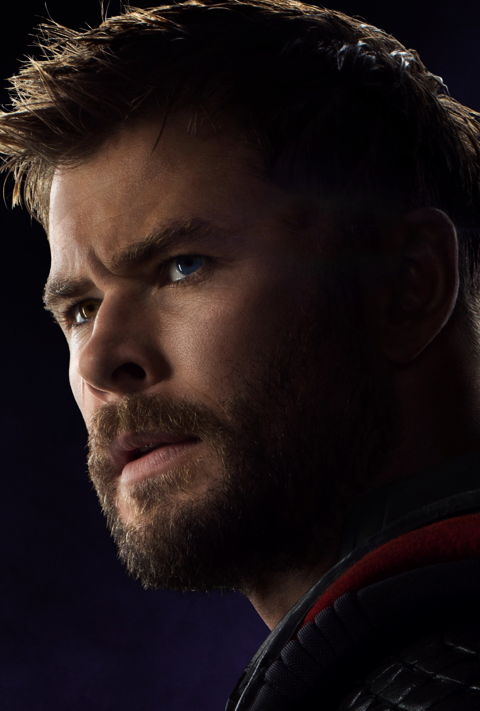
Thor
-
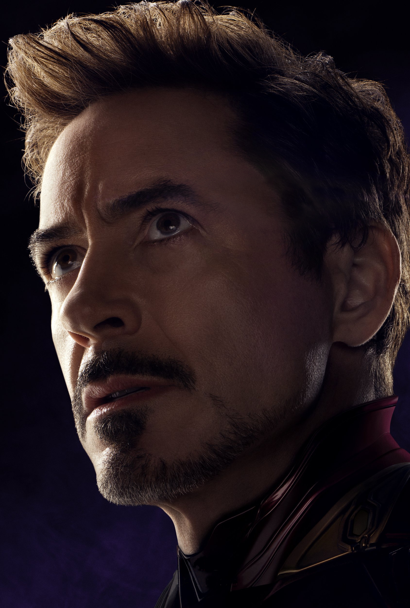
Tony Stark
-
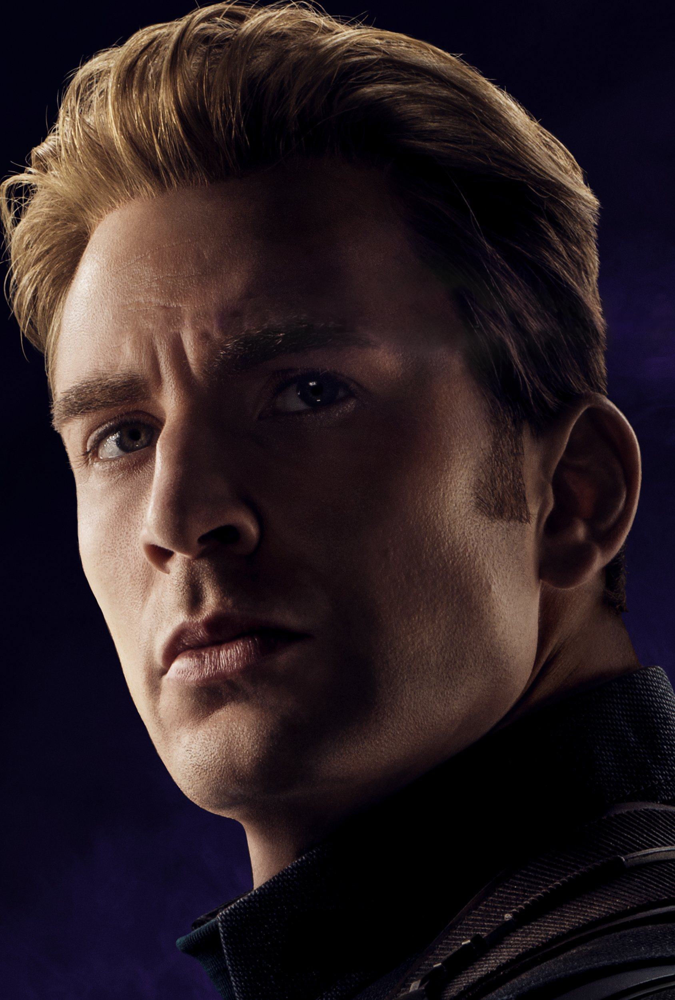
Steve Rogers
-

Bruce Banner
-
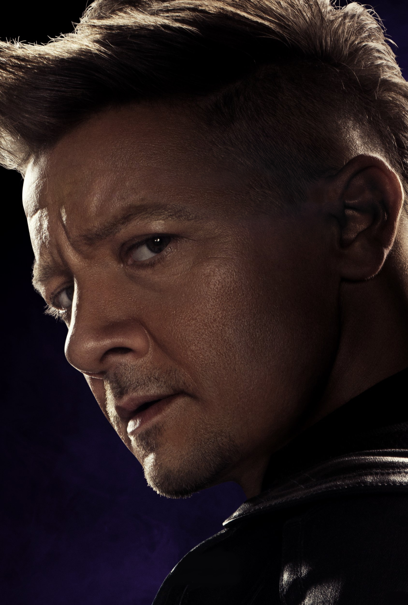
Clint Barton
-
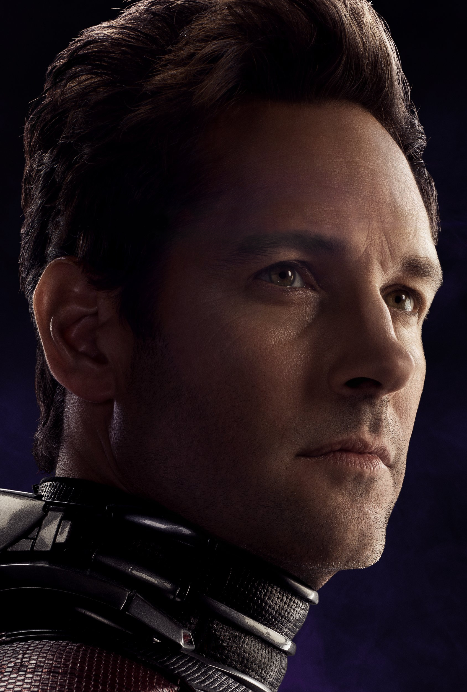
Scott Lang
-
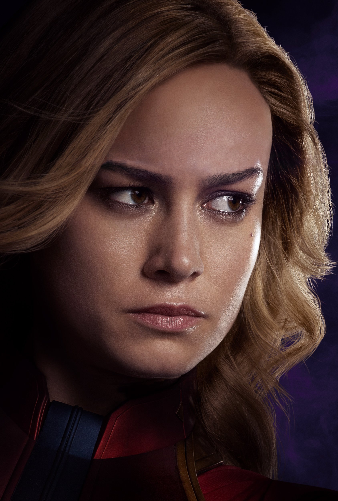
Carol Danvers
-
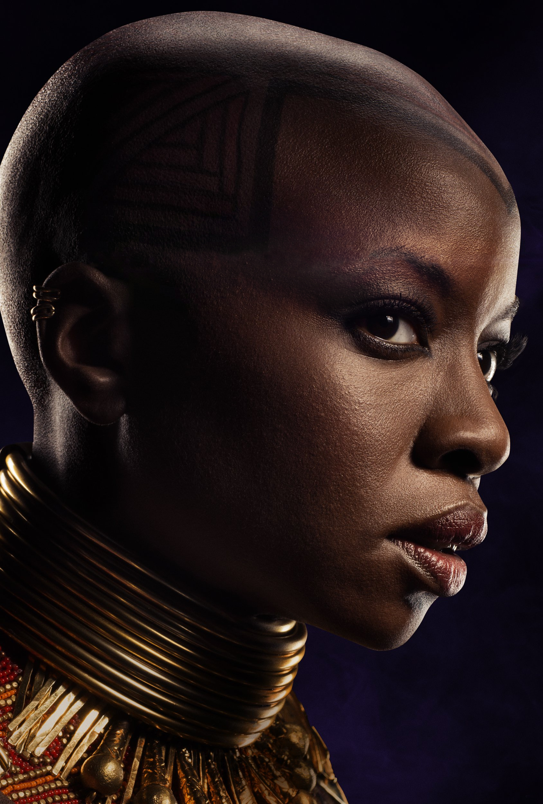
Okoye